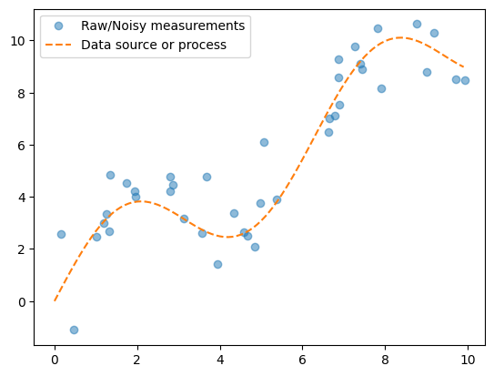
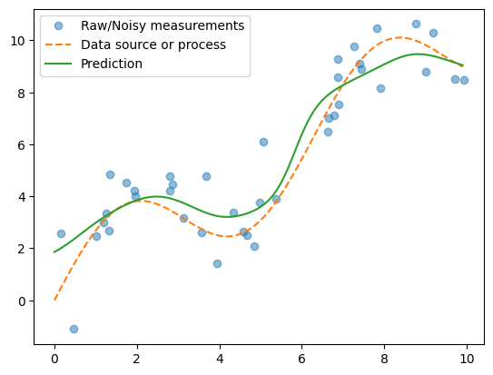

Nadaraya-Watson Regression / Kernel Regression#
This is an early (from the 1960s) non-parametric regression method. The goal is to estimate the value of a function \( m(x) = E[Y|X=x] \) from training data
\( \{(x_i, y_i) | x_i \in X, y_i \in Y, i=1,2,...,n\} \).
As the term ‘non-parametric’ suggests, this is different from regression methods that involve assuming the shape of the function and then estimating the parameters.
Instead, we will try to produce an estimate at a given point \( x \) using a weighted combination of the available data.
The weights will be generated using a scalar-valued function \( f(x, x_i) = \phi(||x - x_i||) \).
The idea here is that the contribution of each data-point or feature \( x_i \) diminishes as the distance between \( x \) and \( x_i \) increases.
Intuitively, this means that data-points closer to \( x \) should contribute more to our estimate, while ones that are farther away should contribute less.
The function \( f(x, x_i) \) is called a kernel. Commonly used kernels include:
Gaussian $$
f(x,x_i) = exp(-\frac{||x-x_i||^2}{h}) $$
Boxcar $$
f(x,x_i) = 1 \text{ if } \frac{||x-x_i||}{h} \leq 1
f(x,x_i) = max(0, 1- \frac{||x-x_i||}{h})
$\(
We usually include a parameter \)h$ that controls the smoothness of the estimated function. Intuitively, this is a way of controlling how much a single data point can influence the
result.
For our experiment, we will use a Gaussian kernel.
Let’s start by generating the data.#
import math
import numpy as np
import torch
import matplotlib.pyplot as plt
def wavyline(x, k=2):
return k*torch.sin(x) + x
n = 40
x_train, _ = torch.sort(torch.rand(n)*10)
y_train = wavyline(x_train) + torch.randn(n)
x_gt = torch.arange(0,10,0.1)
y_gt = wavyline(x_gt)
plt.plot(x_train,y_train, 'o', alpha=0.5)
plt.plot(x_gt, y_gt, '--')
plt.legend(['Raw/Noisy measurements', 'Data source or process'])
plt.show()

As you can see, we have generated 40 noisy datapoints for this curve.
Now, let’s run the regression on our training data#
Using our Gaussian kernel function, we can estimate the curve from the data with a weighted average of the kernel at different points. $$
\hat{y} = \sum_i y_i* \frac{\phi(||x-x_i||)}{\sum_j \phi(||x-x_j||)}
$$
def gaussian(x, h=1):
return torch.exp(-x**2/(2*h))
def nadaraya_watson_regression(x_train, y_train, x_gt, h=1.0):
distances = x_train.reshape(-1,1) - x_gt.reshape(1,-1)
weights = gaussian(distances, h)
norm_weights = weights / weights.sum(0)
y_pred = y_train@norm_weights
return y_pred
y_pred = nadaraya_watson_regression(x_train, y_train, x_gt, 0.5)
plt.plot(x_train,y_train, 'o', alpha=0.5)
plt.plot(x_gt, y_gt, '--')
plt.plot(x_gt, y_pred)
plt.legend(['Raw/Noisy measurements', 'Data source or process', 'Prediction'])
plt.show()

The green curve is a fairly good approximation of the original source or process curve, without learning any parameters!
We can experiment with different values of smoothing constant \( h \).
y_pred_0_1 = nadaraya_watson_regression(x_train, y_train, x_gt, h=0.1)
y_pred_0_5 = nadaraya_watson_regression(x_train, y_train, x_gt, h=0.5)
y_pred_1_5 = nadaraya_watson_regression(x_train, y_train, x_gt, h=1.5)
%%manim -qm -v WARNING MyScene
class MyScene(Scene):
def construct(self):
ax = Axes(x_range=[0,10,1], y_range=[0,10,1], axis_config={"include_numbers": True})
f1 = ax.plot_line_graph(x_gt, y_pred_0_1, add_vertex_dots=False)
f2 = ax.plot_line_graph(x_gt, y_pred_0_5, add_vertex_dots=False)
f3 = ax.plot_line_graph(x_gt, y_pred_1_5, add_vertex_dots=False)
self.add(ax)
for x,y in zip(x_train, y_train):
dot = Dot(ax.c2p(x,y))
self.add(dot)
self.play(Transform(f1, f2))
self.remove(f1)
self.add(f2)
self.play(Transform(f2, f3))
self.wait()
Manim Community v0.18.1